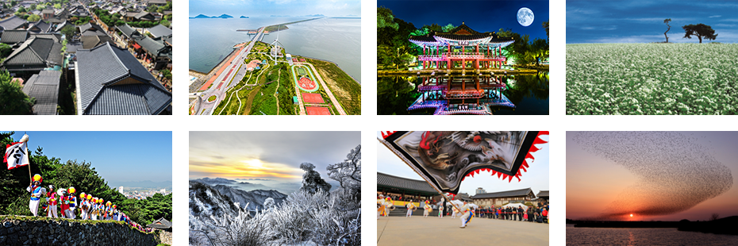
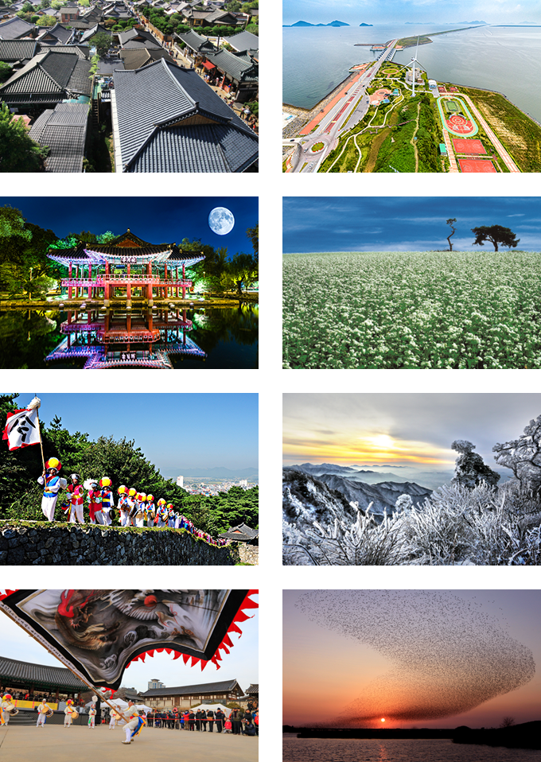

전북소개
- Home
- 전북소개
- 전북소개
대한민국의 보물창고 전라북도는 천년의 비상을 꿈꾸는 역동적이며 아름다운 땅입니다
- 시간이 가져다준 보석같은 자연과 문화로 세계인의 발걸음이 끊이지 않는 전라북도
- 천혜의 자연과 전통 그리고 천년의 역사를 바탕으로 세계인과 소통하며 또 다른 천년 미래를 준비하고 있습니다.
- 전라북도는 볼거리와 먹거리, 즐길 거리가 풍부합니다.
- 사시사철 변하는 아름다운 자연환경 산과 들, 바다 향기가 가득한 맛깔스런 음식, 신명난 우리 가락과 천년역사를 고이 간직한 전통, 자연과 사람이 한데 어우러지는 다양한 축제로 대한민국 국민모두가 사랑하는 마음의 고향입니다.


전북개요
- 면적 : 8,067㎢(8.1%)
- 인구 : 184만명
- 행정구역 : 14개 시ㆍ군 243개 읍ㆍ면ㆍ동
- 지역내총생산 : 48.6조원(2.8%) / 1인당 GRDP 26,579천원 (78.9%)
- 사업체 수 : 총 사업체 수 148천개(3.6%) / 종사자 수 677천명(3.1%)
- 수출입 : 78.3억불
- 고용 : '18년 고용률 57.1%